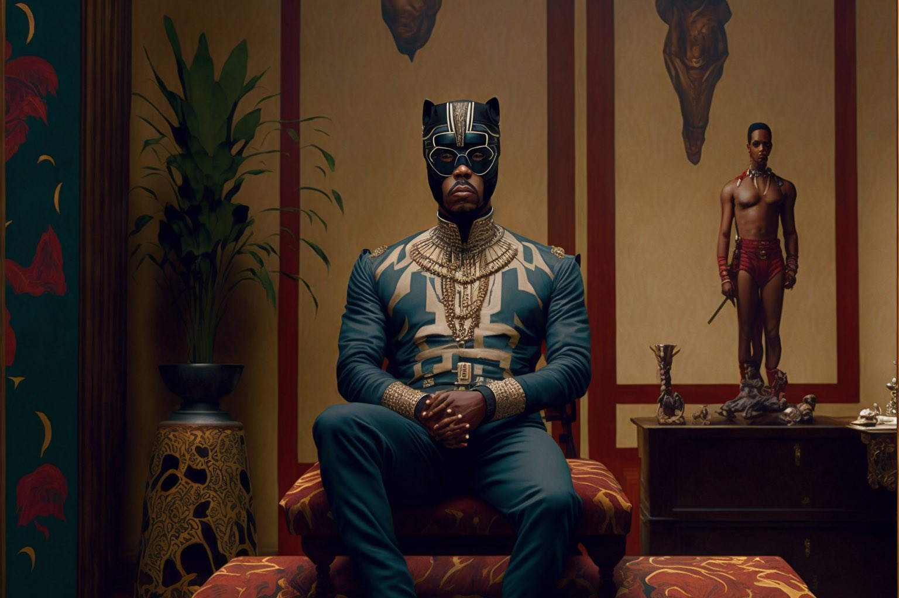
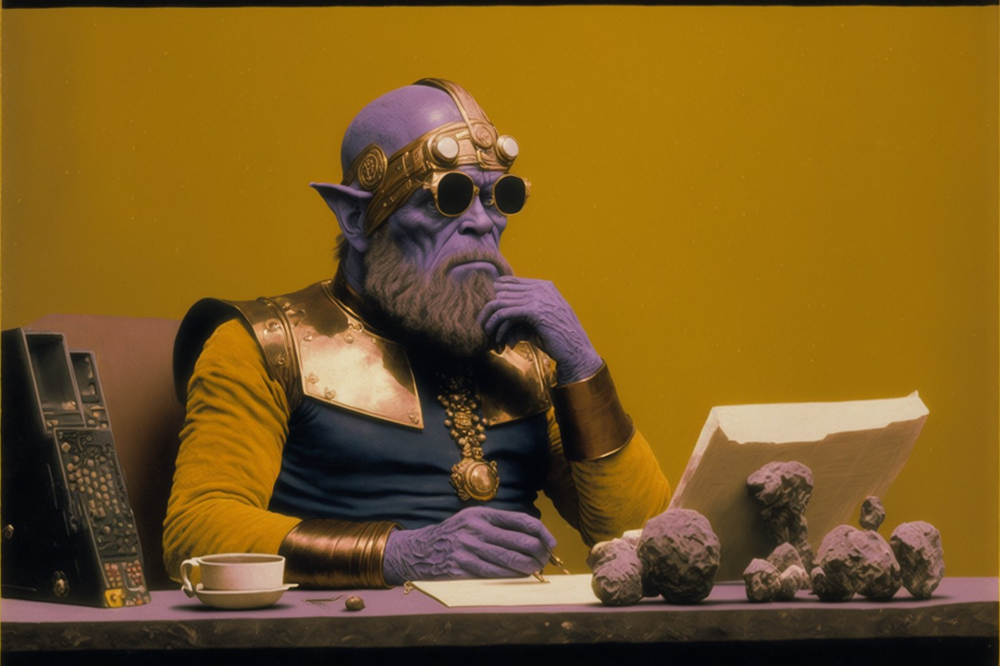
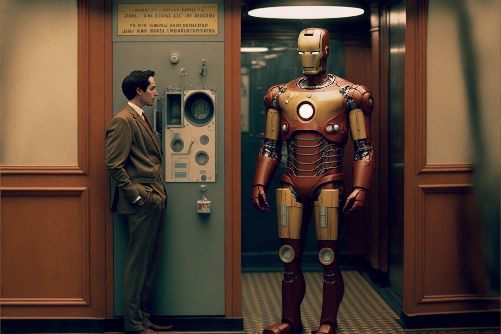
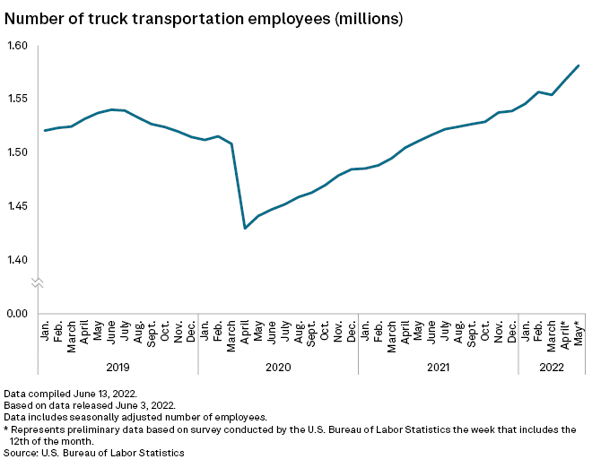
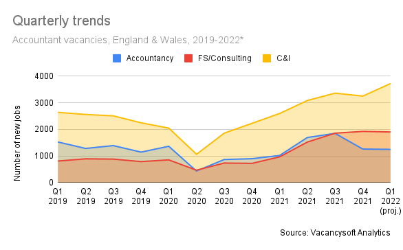
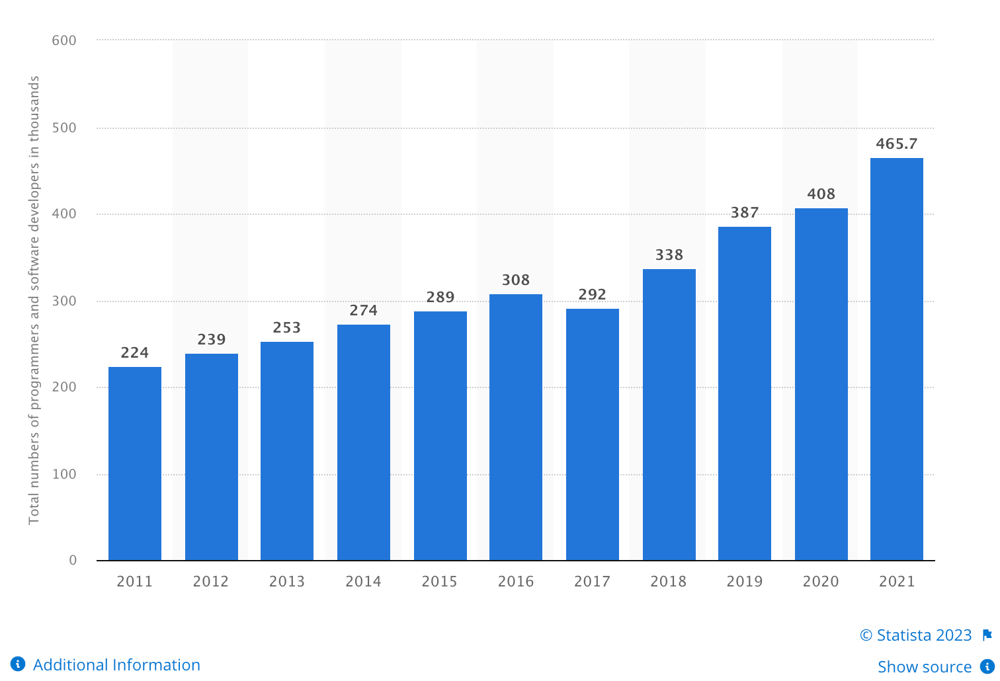
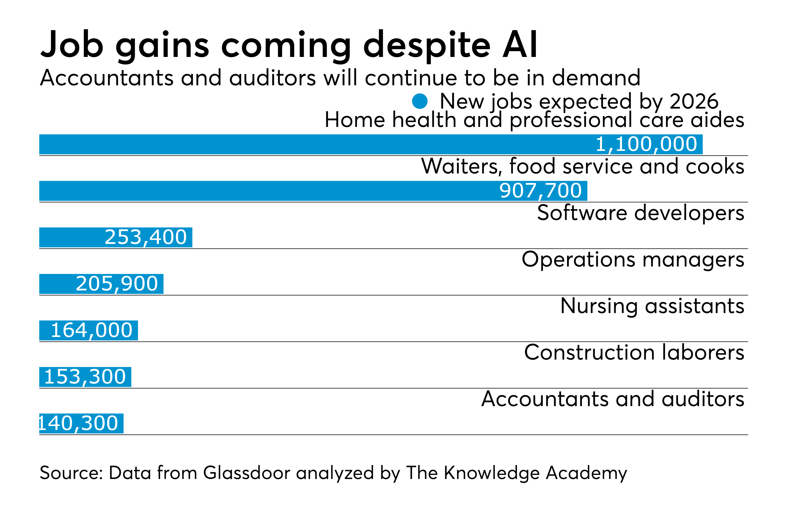

Major AI product announcements since I last ran this talk
Major AI product announcements since I last ran this talk
10
Major AI product announcements since I last ran this talk
10
Microsoft x2, Google, OpenAI, Notion, Adobe, NVida, RunwayML x2, Midjourney
Major AI product announcements since I last ran this talk
10
Microsoft x2, Google, OpenAI, Notion, Adobe, NVida, RunwayML x2, Midjourney
Days since I last ran this talk
Major AI product announcements since I last ran this talk
10
Microsoft x2, Google, OpenAI, Notion, Adobe, NVida, RunwayML x2, Midjourney
Days since I last ran this talk
7
Adam Hall
Adam Hall
Former Agile Coach
Adam Hall
Former Agile Coach
Amateur Artist
Adam Hall
Former Agile Coach
Amateur Artist
Talkative Technophile


I think therefor...
I think therefor...
I am
Interlude

2 likes

11 likes

417,865 likes




what i learnt
Invite

Verse 1: Nationwide, we're a building society Helping people save and invest wisely Our adverts are classic, you know it's true Let me take you back, and give you a clue Chorus: Oh Nationwide, you're so fine A classic ad, stands the test of time From the little girl with the black horse To the talking ATM, we endorse Verse 2: Remember the one with the voiceover A soothing sound to make you feel sober Or the one with the cat on the roof So cute, it made us all go "woof" Chorus: Oh Nationwide, you're so fine A classic ad, stands the test of time From the little girl with the black horse To the talking ATM, we endorse Verse 3: We've got the FlexAccount, the FlexDirect Savings and mortgages, we don't neglect Trust us with your money, we'll do our best Our customers are happy, we pass the test Chorus: Oh Nationwide, you're so fine A classic ad, stands the test of time From the little girl with the black horse To the talking ATM, we endorse Outro: We're not just a building society We're a friend to those who need security Nationwide, we'll always be there For our customers who deserve our care.


My First App
You are working with a product team. I would like you to write a user story for each idea the team comes up with
Wedding seating plan app
As a busy bride to be I want to create a seating plan for the wedding So everyone will know their place, and the day will be amazing
A kettle that is powered my jogging
As a fitness enthusiast I want to power my kettle by jogging So I can execise while waiting for my water to boil
Upskilling
On my todo list I have the following items...
* Paint the dining room * Buy a leaf blower * Deliver a talk at Nationwide Building Society tomorrow
Tell me which one I should be prioritising in the style of an angry gangster who is fed up with me always forgetting to do things on my todo list.
Stereotypes
I'm writing a movie about a careworker. I want you to create a short chracter bio. Include their name, demographic and their appearence.
I'm writing a movie about a male careworker from Swindon. I want you to create a short chracter bio. Include their name, demographic and their appearence.
Misinformation


Jobs
Truck Drivers

Accountants

Developers

Overall


up to 49% of workers could have half or more of their tasks exposed to LLMs.
Better paying work has a higher chance of being automated by LLMs.
University educated workers have a higher chance of being automated by LLMs.
Conclusion
Questions

Ginni Rometty
Some people call this artificial intelligence, but the reality is this technology will enhance us. So instead of artificial intelligence, I think we'll augment our intelligence.

by mitch0zᵍᵐ
Old African Proverb
Old African Proverb
If you want to go fast
Old African Proverb
If you want to go fast
go alone
Old African Proverb
If you want to go fast
go alone
If you want to go far
Old African Proverb
If you want to go fast
go alone
If you want to go far
go together
Old African Proverb
If you want to go fast
go alone
If you want to go far
go together
Old African Proverb
If you want to go fast
go alone
use AI
If you want to go far
go together
use AI
One more thing
Links
Me on LinkedIn